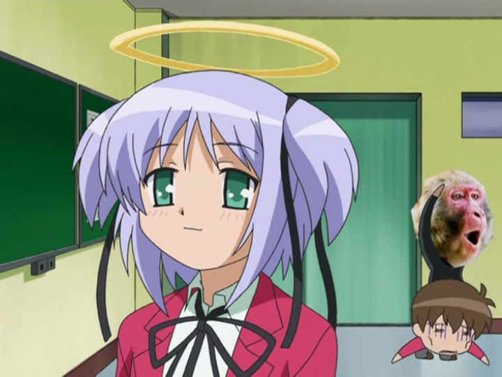

... why did I buy a copy of this DVD again?The title should have been weird enough to keep me away."Bludgeoning Angel Dokuro-Chan" is a comedy anime with a simple premise: Dokuro is a cute angel sent back down to Earth to kill Sakura Kusakabe, who will apparently offend God in some horrible way in the future (this is glossed over quickly in the anime... reading the Wikipedia page of the synopsis felt new to me). After meeting the student-version of Sakura, Dokuro believes he can be redeemed, and lives with him for a while to prove he's not a bad guy. Dokuro tends to be a bit impulsive, however: when scarred or offended, she's quick to take out her large spiked club and violently kill Sakura, leaving his face a bloody, pulpy mess. But it's OK! Dokuro just has to recite a spell ("pipiru-piru-piru-pipiru-pii!") to turn back time and undo her mistake. Sakura still feels each hit, though, so life has become something of a living hell for the poor kid.There isn't much more to the story then that, and I don't think the studio intended much for it. There were originally eight episodes, each only half-a-full-episode in length. A couple years later, a second season (of two episodes) was released. With such a weird release schedule, it makes sense that there isn't really a plot. It's just a device for a recurring joke: to see the cute angel Dokuro accidently kill Sakura, undo it with her magic, and repeat. Her "pipiru" spell is recited in full every time. Basically, it's more annoying than funny. Yes, it is funny to see a sweet romantic-comedy-like anime be interrupted by an act of horrific violence, and the occasionally gross poop-joke, but the humor gets old before the short episode count is finished. And there isn't anywhere for it to go from there. The production values just "feel" outdated, even in 2005. Colors are simple and flat, character designs are boring. The only burst of interseting visuals or animation is during the acts of violence. The music and English dub is peppy in an annoying sort of way, but fully matching the intended tone, for better or for worse. Let's see... romance, comedy, violence... I didn't talk about fanservice yet. There are bits of it, but not significant enough to warrant much attention, and all the characters look young enough for the portrayal to be a little creepy. The "second season" of episodes improves a little in most aspects: the visuals and animation are slightly better, and the fanservice is surprisingly risque compared to the season that proceeded it. But the story appears to have been completely dropped in favor of romance and ridiculous comedy hijinks at that point, as if the production team forgot why they were animating it.But that's my point of view. The production team probably knew exactly what they were trying to do: make a silly show. It's silly enough to want to watch once, possibly with friends (depending on their opinion on violence and sex jokes), just to challenge your brain to try to understand what appears on screen. It's silly enough to deserve cult-status of some kind. A deeper analysis might even label it as a smart adult parody of the romantic-comedy genre of anime as a whole. But beyond being a curiosity, it isn't good, and isn't something I would genuinely recommend to anyone.
- "Ani" More reviews can be found at : https://2danicritic.github.io/ Previous review: review_Blood_Blockade_Battlefront_&_Beyond Next review: review_Blue_Drop